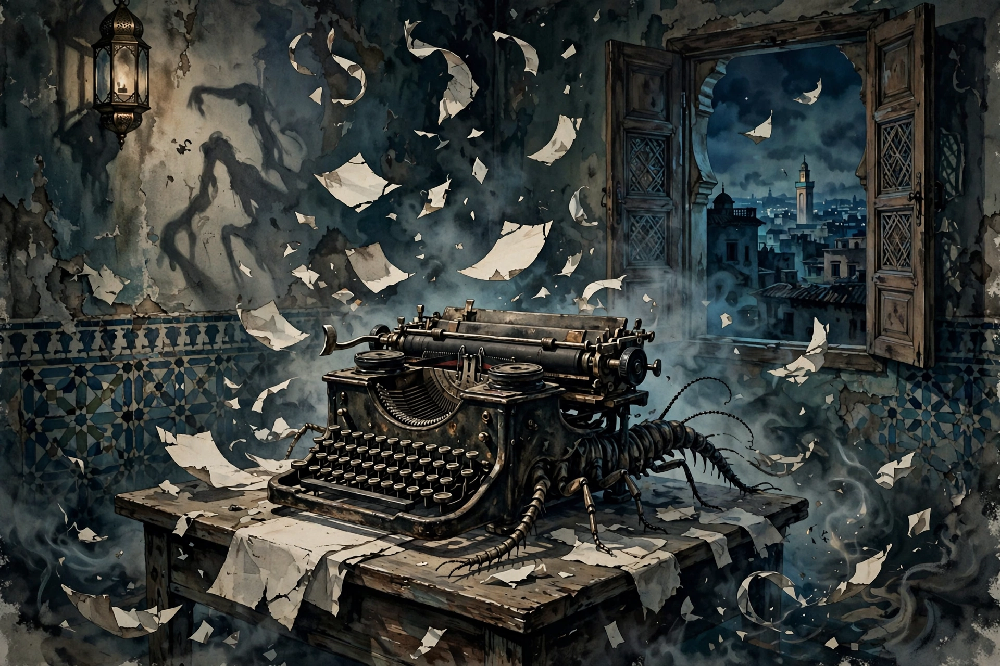

Naked Lunch (first published as The Naked Lunch) is a 1959 novel by American author William S. Burroughs. The book is a loose collection of vignettes — which Burroughs called 'routines' — following junk agent William Lee through the United States, Mexico, Tangier and the hallucinatory Interzone, satirising addiction, control systems, bureaucracy and sexuality.

| Author | William S. Burroughs |
|---|---|
| Published | 1959 (Olympia Press, Paris); 1962 (Grove Press, US) |
| Genre | Beat literature, experimental novel |
| Pages | c. 255 |
Burroughs wrote the material largely in Tangier in the 1950s while addicted to heroin and morphine; Jack Kerouac — who suggested the title, meaning 'a frozen moment when everyone sees what is on the end of every fork' — Allen Ginsberg and Alan Ansen helped assemble the manuscript, which Olympia Press published in Paris in 1959. The 1962 US Grove Press edition, incorporating material restored later in 2001's 'restored text', was the subject of a landmark 1966 Massachusetts obscenity trial, in which the state supreme court ruled the book had social value; it was the last major literary censorship prosecution in the US.
Initially divisive, the novel became a canonical work of Beat and postmodern literature, noted for its cut-up antecedents, black humour and depictions of addiction. David Cronenberg loosely adapted it into the 1991 film Naked Lunch, blending the novel with Burroughs's life.